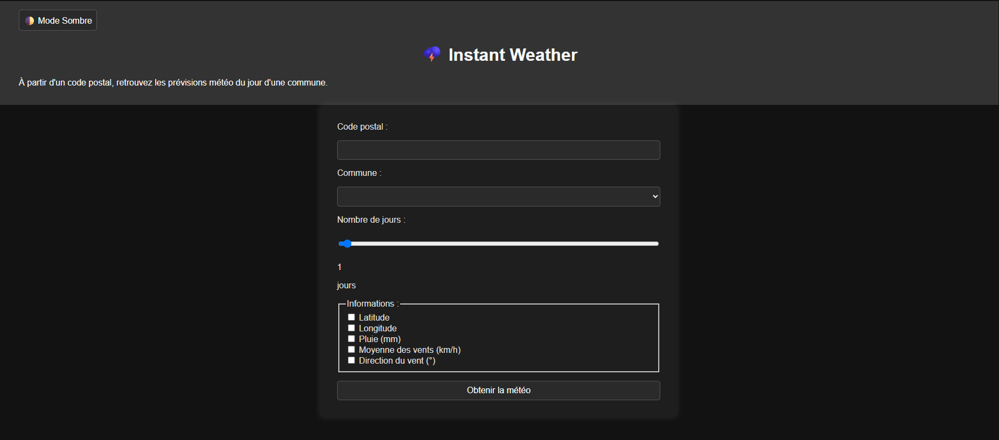

Présentation :
L'objectif de ce projet était d'apprendre à utiliser une API, à manipuler le DOM et à interagir avec la mise
en forme de la page Web avec JavaScript.
Pour cela, nous avons créé un site web permettant de voir les prévisions météo à venir en fonction d'une
commune.
Mes camarades et moi-même avons tout d'abord créé une V1 pour comprendre comment utiliser l'API et manipuler
le DOM.
Ce projet est donc la Version 2. J'y ai ajouté :
- La possibilité de choisir le nombre de jours (de 1 à 7) pour les prévisions météorologiques.
- La possibilité de choisir des informations supplémentaires à afficher via des cases à cocher (Latitude,
longitude de la commune, direction du vent en degrés, etc...)
- La possibilité de mettre le site en affichage clair ou sombre.
Le projet est responsive et conforme aux validateurs HTML et CSS du W3C, ainsi qu'à la norme WCAG AA 2.0
Avec ce projet, j'ai appris :
RT3 - Créer des outils et des applications informatiques pour les R&T
Niveau 1 : S'intégrer dans un
service informatique :
Ma Contribution :
J’ai mis en place la connexion avec l’API Météo Concept pour récupérer les prévisions météo à partir du nom
d’une commune ou d’un code postal en JavaScript.
J’ai aussi ajouté plusieurs options pour améliorer l’expérience utilisateur, comme la possibilité de choisir
le nombre de jours de prévision (de 1 à 7) ou d’afficher des infos météo supplémentaires (latitude,
direction du vent, etc...).
Pour rendre le site plus agréable visuellement, j’ai développé un mode sombre, que l’utilisateur peut
activer selon ses préférences.
Enfin, j’ai veillé à ce que le site soit responsive et qu’il respecte les bonnes pratiques web (validation
W3C, accessibilité WCAG AA 2.0).
Preuves :
Site web :
Code :
Analyse du projet et auto-évaluation :
Ce projet m'a permis de développer mes compétences en JavaScript grâce à des API et à la manipulation du DOM.
Je suis très satisfaite de ce premier projet en JavaScript !
Lors de ce projet j'ai rencontré des
difficultés pour faire des appels d'API entre le JavaScript et l'API et j'avais des difficultés à mettre en
place un lien entre le code postal et les villes.
Pour résoudre ces problèmes j'ai lu avec attention la
documentation de l'API.
J'ai su anticiper des erreurs comme un mauvais code postal entré par
l'utilisateur, pour cela j'ai rajouté une vérification pour l'intégrité des codes postaux.
Ce projet
me donne encore plus envie
d'améliorer mes compétences en développement web en utilisant d'autres API pour les prochains projets !